Learning Record 11
Agent Skill Evaluation and Evolution: Frameworks and Benchmarks
Agent Skill Evaluation and Evolution: Frameworks and Benchmarks
主要是最近在做skillopt这方面的工作，但是又感觉创新点不够，所以就想对这个领域了解多一点
但是这篇论文我感觉我吸收得有限，因为它很大篇幅都是列举它分的类有什么论文工作/方法/benchmark，然后没有看过那些工作并且对这个领域了解有限的我也只能建立一个笼统见过的认知，真正我要记录的可能还是本论文中与我领域比较相关的总结和方向吧
先捋一下这篇论文的结构
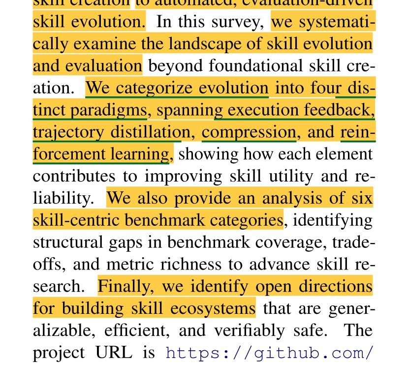
然后我得到启发的主要是关于skill evolution的那部分，和关于skill saftey之类的作者提出的一些我能感觉可能和我工作挂钩的
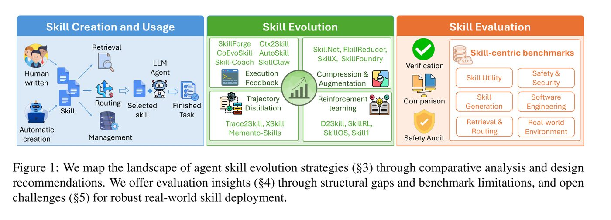
关于skill evolution:
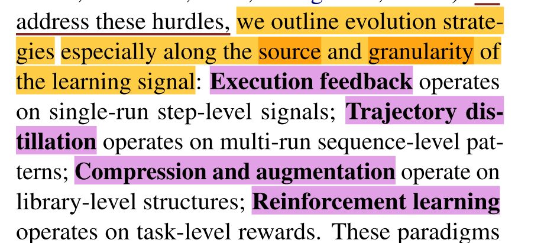
Excution Feedback:
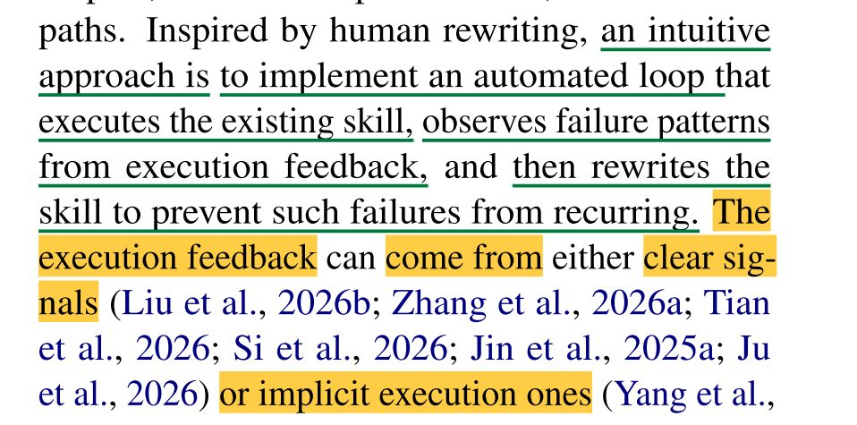
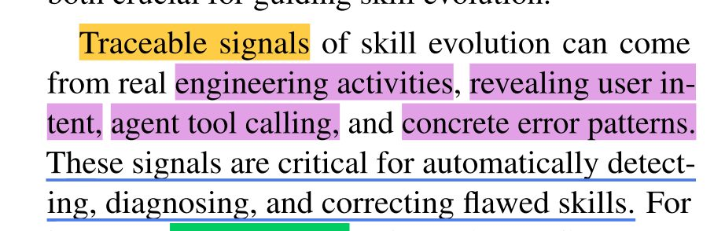
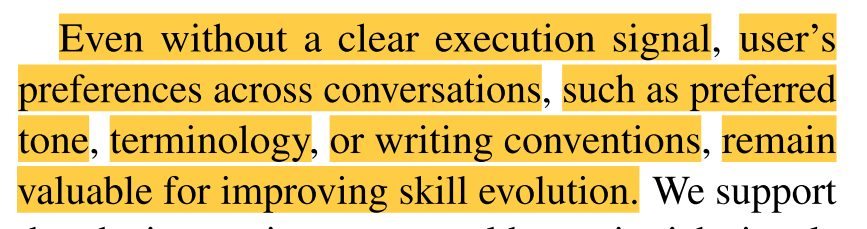
(上面似乎很有理，但是在skillopt这个场景，可以说是全自动的的，似乎用不上)
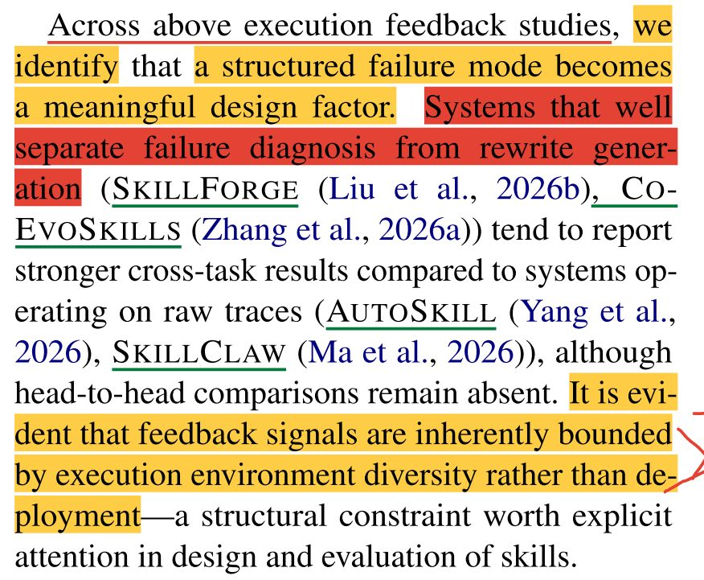
一个很有启发的发现：本段内容
把“失败诊断”和“修正生成”分开做，比直接改原始轨迹效果更好；但无论如何，反馈本身的价值受限于测试环境的多样性，这是设计技能评估时必须心中有数的一个硬约束。
这其实我们可以直接用，因为现在就是根据轨迹直接生成修改意见，我们可以做的是，先让LLM生成失败诊断，然后生成修正生成，一个很好的切入点！
Trajectory Distillation
主要是一些具体的工作，但是这些工作可以看到与skillopt也有共通点，比如
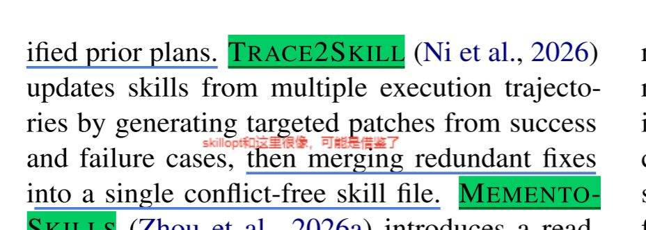
而这个组装成patch的思想其实后面是有总结出来了的
Compression and Augumentation
我感觉主要是关于技能库的相关方面，包括对技能合并等，似乎和我们目前方向不是很相关
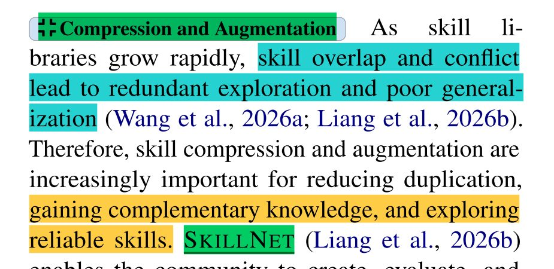
Reinforcement Learning（这部分还需要深入一下）
这个方向其实和我们目前方向和符合，但是我没很看懂，关于一个D2Skill的工作还挺有趣的
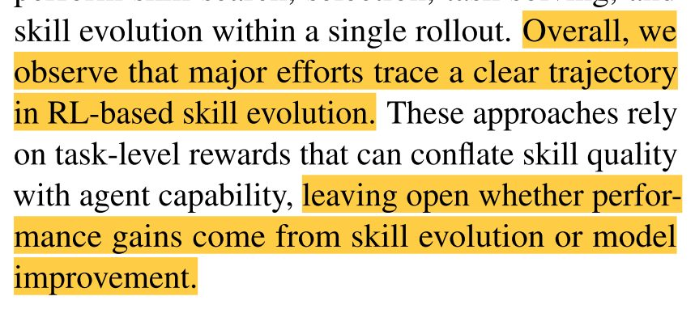
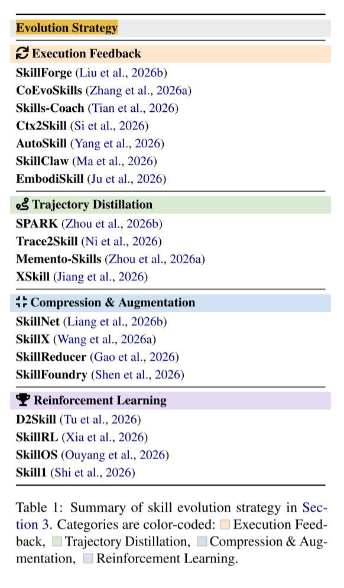
然后就是关于benchmark的一些工作
这里跳过
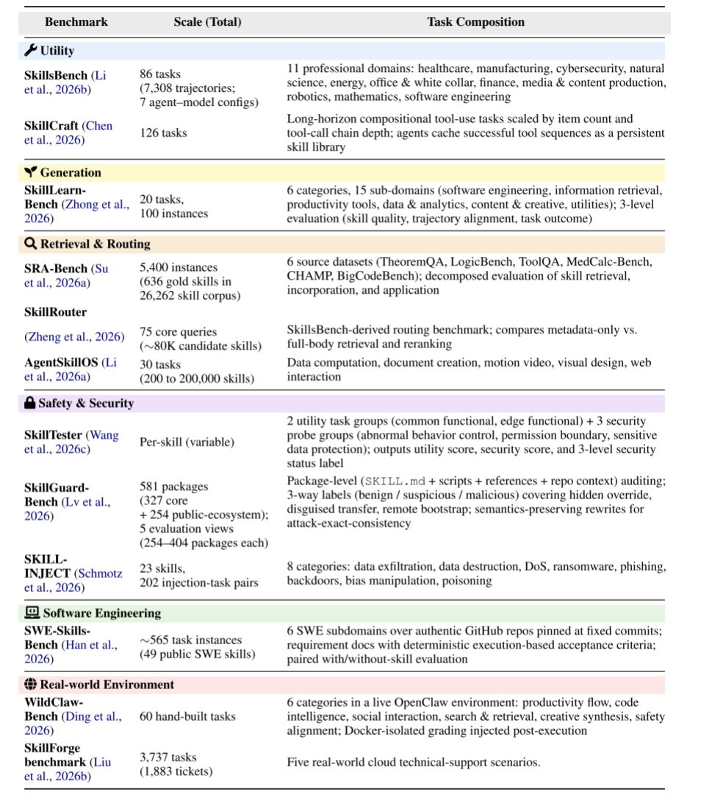
然后是第五部分Reflection and Future Directions
前半部分主要在讲关于多模态技能的相关方面，与我们当前领域关系不大
后半部分有一些启发
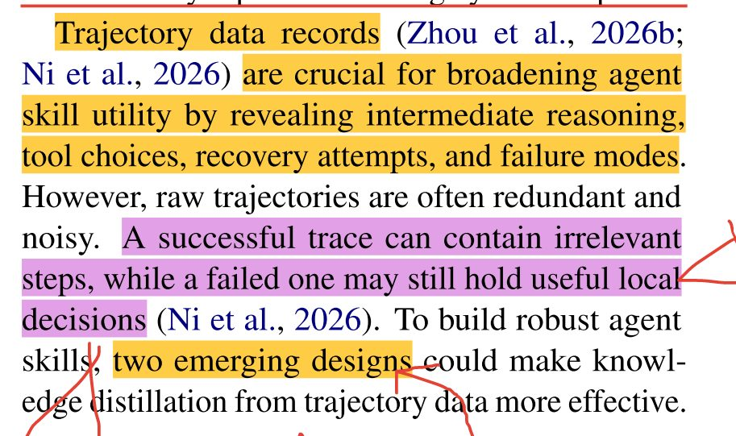
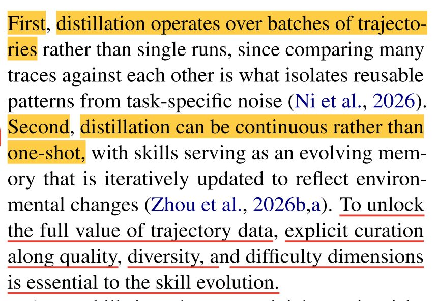
第一点就是前面说的有merge设计，第二点及后面的内容我还没理解
—————————————————————————————————-
关于skill safety
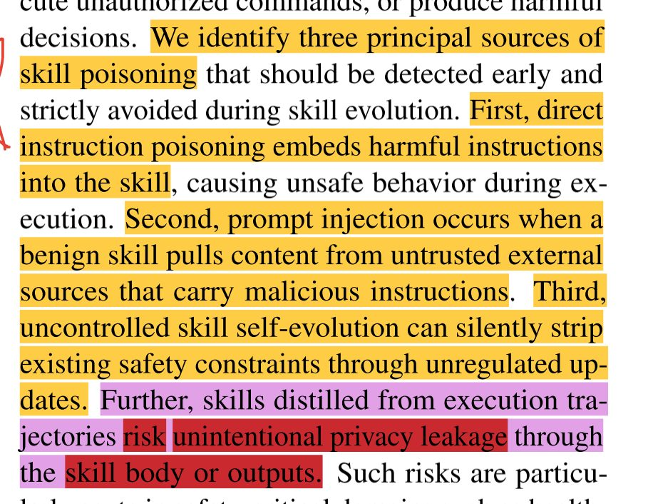
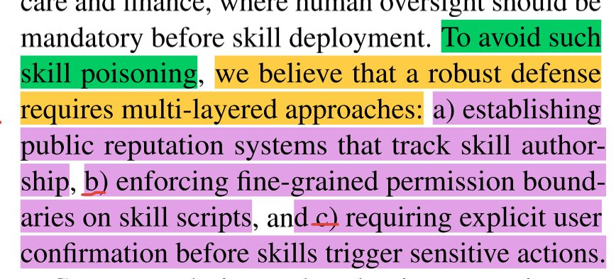
然后是其他的一些关于技能库，全流程（不要让分析和进化/生成流程分离）等的反思，对我们工作没什么帮助
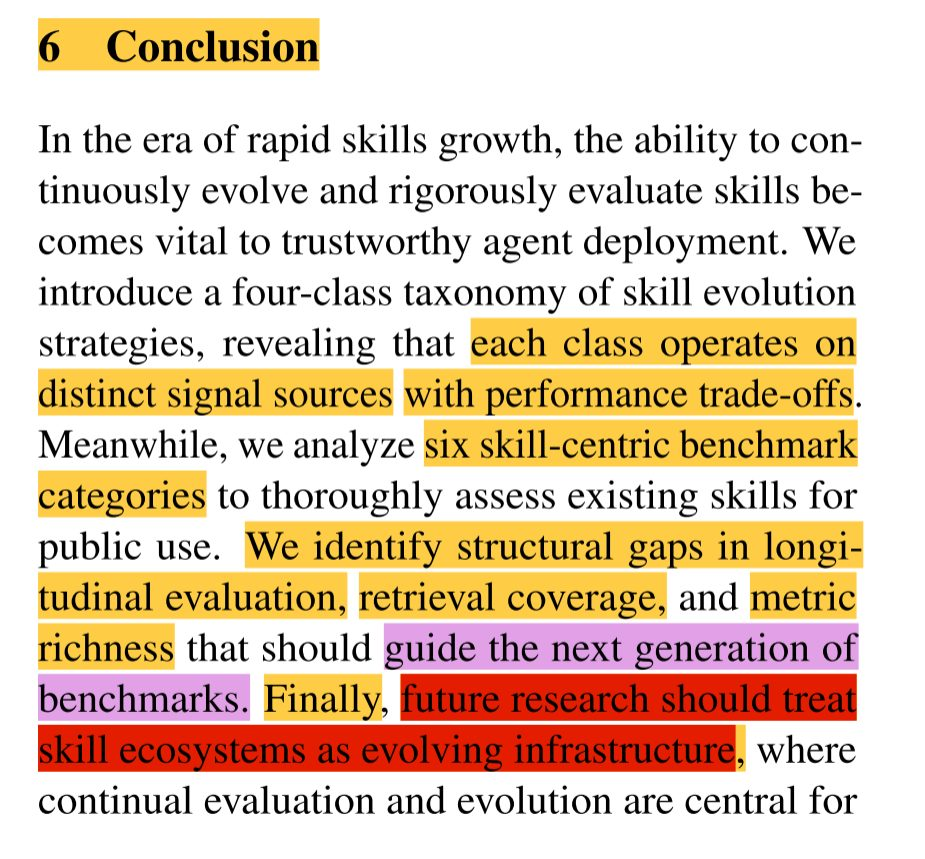